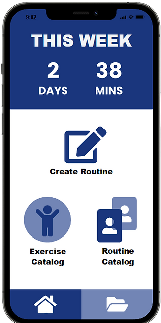

Interface Design "Fit 4 Life"
Fit 4 Life was an interface design created in protopie, the functionality of the product was meant as a fitness application for Elders.

Product Website
Protopie
The process of creating our project started with finding a specific design domain,
initially our group investigated many different mobile websites popular or recommended among senior users.
From there we found a few possible design domains that could be undertaken,
such as Medical, Community building, Financial assistance, Detecting scams, and keeping the body in shape.
Our group settled on the design domain for seniors that are concerned with their physical health.
From there, we identified some common necessities for seniors to keep in shape.
- 150 minutes of moderately intense physical activity
- 75 minutes of vigorous physical activities
- At least 2 days a week of muscle strengthening activities
Then, we also identified that there are four pillars of an effective senior fitness program, balance, endurance, strength, and flexibility.
We chose to focus our project's categorization mainly within these four categories to contain impactful preset exercises to elders within our application.
First Iterations of Wireframes:

Our first wireframes came from basic sketches with the main idea being a custom workout routine focused on balance, endurance, strength, and flexibility categories.
Our main interactions were creating exercises and folders, browsing other users routines,
and being able to rate routines based on how effective they were for the user.
After review, our second wireframes were created to contain more interactions,
as well as a comment and rating system that rates how effective users found the routines and users are periodically prompted to
fill in a survey similar to MBTI surveys after using a custom routine for an extended period of time.
The plan for our user testing phase involved conducting them both in person as well as remotely to diversify our data.
In-person tests were conducted in ‘natural’ environments at home and we observed the user through watching their interactions over their shoulders.
The remote tests were conducted over video call on zoom, and there we observed the user’s reactions and commentary while going through our interactive work.
When it came to actually conducting tests, we assigned the user 3 different tasks, and asked them to create an exercise routine,
add exercise from the exercise catalog to the library, and find and use a routine from the routine catalog.
The users we asked to conduct a usability test with were seniors that were aged 65+ and within our applications target demographic.
Some problems we found were that:
- There was difficulty reading the instructions text.
- Button confusion in catalogs tab.
- Confusing user flow for creating routine.

The adjustments we made were to simplify our interaction displays and moving elements around to create a more coherent digestible product for seniors.
We made fonts larger, made elements appear individually periodically, increased clarity on what is and isn’t a button,
and decreased the amount of user interactions needed to create personal custom routine folders.